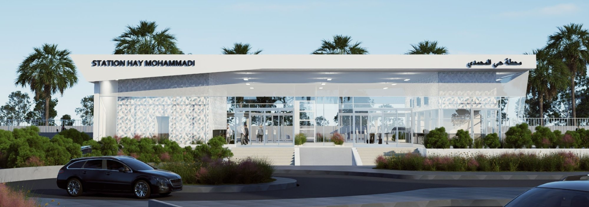

PRO · Infrastructure
Hay Mohammadi Station
- Location
- Casablanca
- Year
- 2025
- Studio
- Yassir Khalil Studio
- Type
- RER Station
- Surface
- 6 500 m²
- Register
- 09 of 12

A rapid transit station in the Hay Mohammadi district of Casablanca, one of the city's oldest and most densely inhabited popular neighbourhoods. The station is embedded within a complex urban fabric and is designed to act as a civic infrastructure in a double sense: functional as a transport node and spatial as a public threshold for a district that has historically lacked investment in its public realm.
The project resolves a challenging site condition where the rail line runs at grade through a constrained urban corridor, requiring the station building to negotiate between the rail platform level and the existing street network. The covered concourse is designed to extend the street life of the neighbourhood into the station itself, with the canopy structure creating a sheltered public space that is active throughout the day. The project was produced in Revit with full structural and services coordination at Yassir Khalil Studio.
Drawings and images

Render, Aerial View
Fig. 2
Aerial render · White diamond canopy covering the passenger concourse and rail platform at grade · Bus shelters and soft mobility connections along the boulevard · Landscaped perimeter integrating the station into the dense Hay Mohammadi neighbourhood · Yassir Khalil Studio · 2025
Full size: Fig. 2, Render, Aerial View
Structural System
Fig. 3
Exploded axonometric · Five-layer structural assembly · Building Envelope, Roof: white HPL panels on metal cladding rails with insulation · Steel Roof Framing: structural steel space frame, precision-machined nodes and bolted connections · Primary Structure: HEA 240 steel columns, aluminum I-beams, column base and beam connections · Glazed Curtain Wall: double-glazed Low-E units, thermally-broken anodized aluminum mullions, sliding door units · Building Envelope, Facade: white HPL panels on light-gauge metal studs with sheathing
Full size: Fig. 3, Structural System
Section, Street Facade
Fig. 4
Street facade section · Canopy peak at +9.50 m tapering to +7.00 m at the rear · Full-height glazed concourse at +6.00 m · Platform level at +0.15 m · Inclined structural legs transfer the canopy load to the ground without interrupting the public concourse · Platform canopies flanking the main volume at -6.50 m · Trees integrated at street level on both sides
Full size: Fig. 4, Section, Street Facade